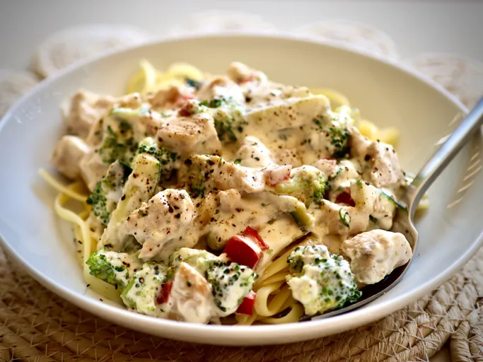

Chicken Alfredo

Description
A quick chicken alfredo recipe made with broccoli, zucchini, and red bell pepper.
Ingredients
6 ounces dry fettuccine pasta
1 (8 ounce) package cream cheeese
6 tablespoons butter
1/2 cup milk
1/2 teaspoon garlic powder
salt and pepper to taste
2 skinless, boneless chicken brest halves - cooked and cubed
2 cups chopped fresh broccoli
2 small zucchini, julienned
1/2 cup chopped red bell pepper
Steps
- Bring a large pot of lightly salted water to a boil. Add pasta, and cook for 8 to 10 minutes, or until al dente; drain
- While pasta is cooking, melt cream cheese and butter in a skillet over low heat. Stir until smooth. Stir in milk, and season with garlic powder, salt, pepper. Simmer for 3 minutes, or until thickened, stirring constantly.
- Mix in chicken, broccoli, zucchini, and red pepper. Cook 3 minutes over medium heat, then reduce heat, and simmer 5 minutes, or until vegetables are tender. Serve over fettuccine.
Home